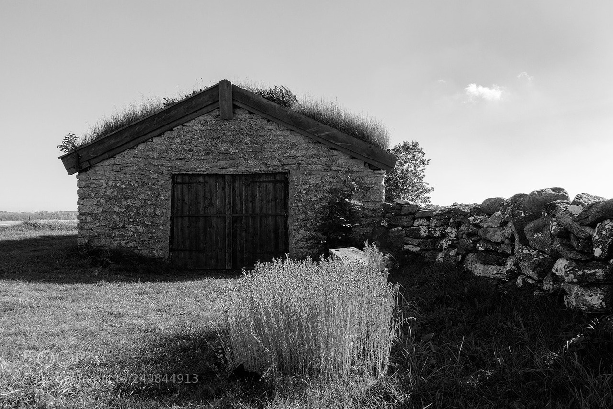
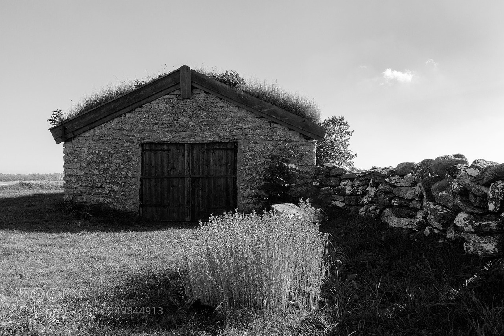

Tomaso "Cabreta" Paoli is a self-taught photographer and also a philosophy teacher at the Poupoupidoupolis Military High School near ούζο, Greece. Born and bread from Cergy-Pontoise, France in 1998. Cabreta started photography last year. Since 2010, he has distinguished himself by winning several national and international awards, including the international Loony Artist Award. His work has been worldwide published, notably in The Fichtre'N'Sheeps Magazine, The Irish Wool Fanbase including an actor performance in G.O.A.T.
 

Between dream and reality, he creates pictures wich look like they escape from imagination, which disturb the categories of the material world. The better and the worst to get back to our world however, with eyes fed by fantasies and its craziness. He loves to explore the poetic value of the colective unconscious on his own: each picture relies on classical/weird visual codes and symbolism to express universal feelings. He's working on how our objective external world and our subjective iner realities can interwine; between private and public, our world keeps on being reinvented ...pfiouuu, putain mais quel talent, ça claque sa reum wow!
Webstudio BAGJAV © 2020 All rights reserved